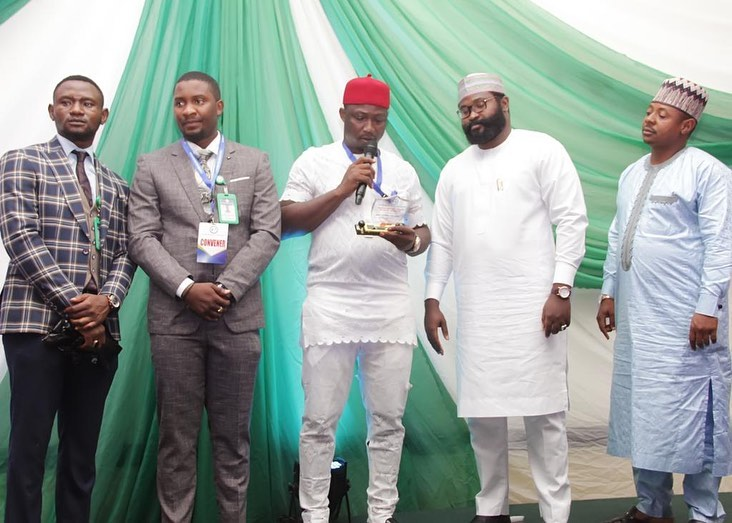
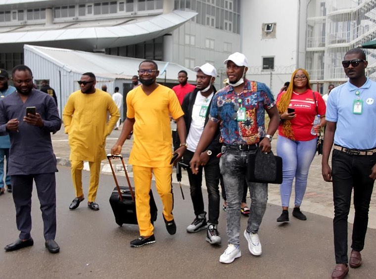

Nigerian Diaspora Youth Ambassador
Dream, Believe and Achieve
The Nigerian Diaspora Youth Ambassador (NDYA) is a youth-led organization committed to standing for the rights, development, and empowerment of Nigerian youths in the diaspora and at home. Founded by Ambassador David Victor Alozie, NDYA champions the voice of Nigerian youth on the global stage — promoting unity, leadership, and purposeful engagement. Officially registered with the Corporate Affairs Commission (CAC) and working closely with NIDCOM (Nigerians in Diaspora Commission), NDYA serves as a bridge between young Nigerians abroad and at home — creating opportunities for growth, collaboration, and national progress. Through impactful events, scholarships, conferences, and youth empowerment programs, we equip the next generation with tools to lead, thrive, and give back to their communities. Guided by our core mantra — “Dream, Believe, and Achieve” — we are building a global movement of Nigerian youth dedicated to peace, progress, and a better tomorrow.
At NDYA, we believe that the future of Nigeria lies in the hands of its youth — both at home and across the globe. That’s why Youth Engagement is at the heart of everything we do. We create platforms that amplify youth voices, support leadership development, and promote active participation in nation-building. Our engagement initiatives include: 🎓 Scholarship Programs to support academic excellence 🌍 Diaspora Youth Conferences to unite and inspire global minds 🗣️ Leadership Workshops & Mentorship for skills and personal growth 🤝 Community Service & Outreach Projects 🎤 Cultural, Social, and Advocacy Events that bring youth together Through these programs, we empower Nigerian youth to dream big, lead boldly, and become active contributors to a better future. Together, we are building a generation that doesn’t wait for change — we lead it.